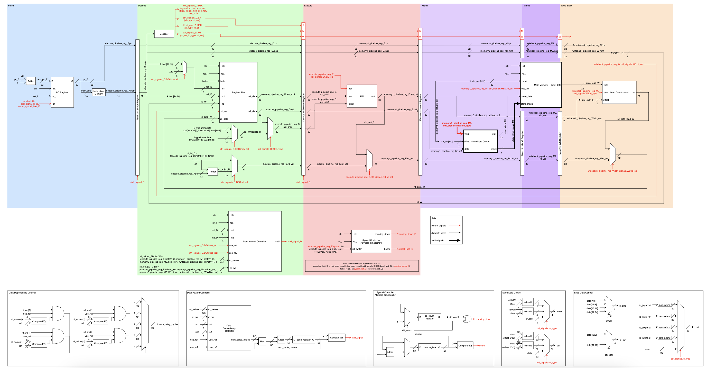
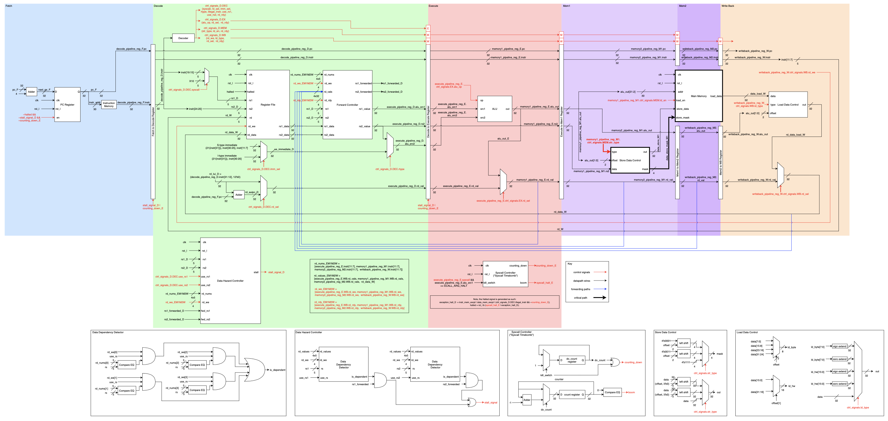
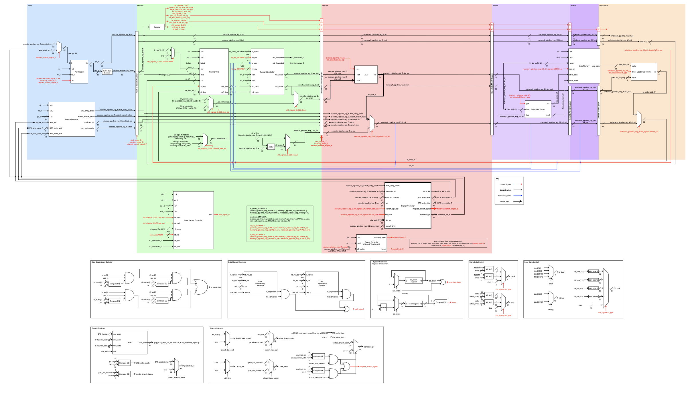
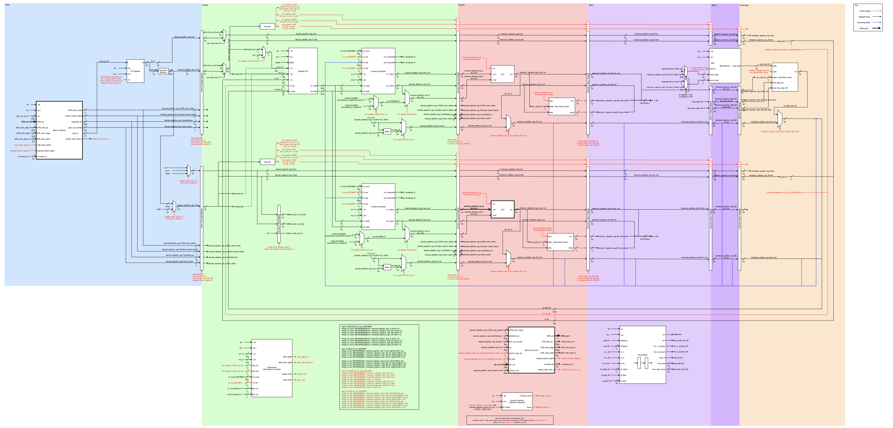

Project Description
This is an RTL implementation of a 2-way superscalar, somewhat out-of-order, 5-stage, RISC-V core.
Used a BTB for branch prediction, future revisions split this into a BTAC/BHT.
Data hazard controllers forwarded values or stalled the pipeline.
Fun features included a store buffer.
The core has limited OOO capability,
by which I mean stores are buffered,
and instructions can be shuffled in-between the 2 parallel pipelines if there is a data hazard, etc...
The top pipe (the U-pipe, to steal P5 terminology) is first in program order,
and the bottom pipe (the V-pipe) is second.
If there is a data hazard causing the top pipe to stall,
I sometimes still allow the V pipe to progress,
as long as it can be proven that no conflicts exist.
More complex considerations about memory consistency would come into play,
were this intended to be in a multicore environment.
The only functional goal here was single-threaded correctness,
which is admittedly a limited goal.
I've also implemented various proper SS OOO element like a ROB, IQ, and RAT,
and hope to integrate them at some point.
While I ambitiously want to implement an entire P6,
Or a DEC Alpha,
I'd settle for something like a Motorola 68k

Single Cycle PoC (ISA subset)

Version 1 (ISA subset)

Version 2 (ISA subset)

Version 3

Version 4